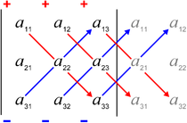

Elementary properties of the determinant
3.3.1 Theorem. Let A an n x n matrix
If A has a row or column of zeros then det A = 0;
If two row (columns) are interchanged the determinant will change sign;
If A has two equal rows or columns, then det A = 0;
The determinant is a linear function of each row (or column), i.e.
d1
d2
Where ai are the row vectors in the matrix.
If a linear combination of rows (columns) is added to a row, the determinant is unchaged.
If the rows (columns) of A are linearly independent vectors, det A = 0;
det (λA) = λn det A.
If A is triangular (in particular, diagonal) det A = a11 ⋅ a22 ⋅⋅⋅ ann.
Suppose that A is upper triangular and calculate det A by Laplace expansion along the first column. Then det A = a11A11. But also the matrix whose determinant is A11 is upper triangular, thus by calculating A11 in the same way recursevely, we have the claim.
Proof.
It suffices to calculate det A using Laplace expansion along the row made up by zeros;
We use induction. For n = 2 the conclusion may be checked directly (this is the induction base). We assume the property to hold for (n − 1) x (n − 1) matrices with n ≥ 2 (induction hypothesis) and prove it for n x n matrices. If we perform a Laplace expansion along the k row of the n x n matrix, which has not been moved, then the n cofactors will be determinants of (n − 1) x (n − 1) matrices whose sign has changed with respect to the original matrix. Thus the sign of the determinant of the n x n matrix has changed sign.
By exchanging two equal rows the determinant must change sign by b); However the matrix is the same, hence the determinant is unchanged; The only possibility is that det A = − det A = 0;
We calculate the determinant by Laplace expansion along the 1st row, by letting
a1 = (a11, a12, ..., a1n), b = (b11, b12, ..., b1n)
Analogously the other property is verified.
We indicate the rows of the A with the vectors a1, a2, ..., an we have using point d)
If the rows are linearly independent vectors, one of them is a linear combination of the others, e.g. say the first row is a linear combination of the other rows, then:
Then by point d)
By point c), since each of the matrices above has two rows that are equal.
We apply n times property d2)
Example. We use the previous theorem to simplify the calculation of the determinat. Let's calculate the determinant of the following matrix
If we subtract from the first row the double of the second, we obtain a row with two zeros. By point e) of the theorem this does not alter the determinant.
Binet's Theorem
Binet's theorem. If A and B are matrices of the same order then
det AB = det A ⋅ B
Sarrus' rule
Sarrus' rule allows to calculate the determinant of a matrix of order 3 x 3. Let's calculate the determinant of the following
by Laplace expansion along the first row
by pairing positive and negative terms together
det M = a11 a22a33 + a12 a23 a31 + a13 a21 a32 − a13 a22 a31 − a11 a23 a32 − a12 a21 a33
this sum of terms can be obtained directly by Sarrus' Rule. To the right of M we adjoin the first and second column:
We sum the product of the elements of each diagonal labelled by "+" and subtract the product of the terms of each diagonal labelled by "−".